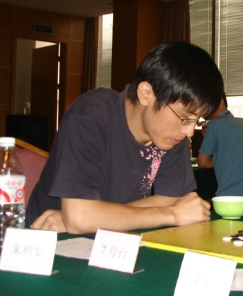

第八届浙江五子棋公开赛A组获得资格名单
首页
五子棋新闻
#1 第八届浙江五子棋公开赛A组获得资格名单 作者：weigui 发表时间：2011-7-15 16:24:08
戴晓涵、贺启发、梅凡、吴镝、陈靖、朱建锋、李磊、李一、江齐文、朱相如
浙江赛“A组十强赛”，第七届浙江赛成人A组前五名均有参赛资格(若有缺席，则第六可获得资格，以此类推)，第七届浙江赛成人B组前四名获得第八届浙江赛成人A组资格。（若有缺席，则第五可获得资格，以此类推）。另设一名主办单位特邀名额。
为充分体现竞争/*760*90，创建于2012-2-9*/ var cpro_id = 'u761865';
#2 Re:第八届浙江五子棋公开赛A组获得资格名单 作者：小丸.net 发表时间：2011-7-15 16:42:53
是否可以列举以上棋手那个是“留五”那个是“升四”，那个是“邀一”？
#3 Re:第八届浙江五子棋公开赛A组获得资格名单 作者：猪小弟 发表时间：2011-7-15 16:49:48
按照顺序已经列的很清楚了。不过邀请的那一个可能会影响到A组的整体水平，哈哈
#4 Re:第八届浙江五子棋公开赛A组获得资格名单 作者：梧桐风 发表时间：2011-7-15 16:52:08
前五：戴晓涵、贺启发、梅凡、吴镝、陈靖
升四：朱建锋、李磊、李一、江齐文
邀一：朱相如
［ 小丸.net 于 2011-7-15 16:58:36 时花20金币送鲜花一朵］
［ 被感动的人 于 2011-7-15 19:44:00 时花20金币送鲜花一朵］
［ 掌棋宣传员 于 2011-7-15 21:19:48 时花20金币送鲜花一朵］
#5 Re:第八届浙江五子棋公开赛A组获得资格名单 作者：小丸.net 发表时间：2011-7-15 16:59:10
代表爱五子棋六万网友向楼上致敬。。。。小花一朵。不成敬意。
#6 Re:Re:第八届浙江五子棋公开赛A组获得资格名单 作者：梧桐风 发表时间：2011-7-15 17:01:21
引用：
原文由 小丸.net 发表于 2011-7-15 16:59:10 :
代表爱五子棋六万网友向楼上致敬。。。。小花一朵。不成敬意。

#7 Re:第八届浙江五子棋公开赛A组获得资格名单 作者：weigui 发表时间：2011-7-15 17:02:10
3楼的知道邀一的曾经获得过全国第五名，是位五段选手，首届智力运动会浙江一台，只负一局的情况？
#8 Re:第八届浙江五子棋公开赛A组获得资格名单 作者：天真o邪 发表时间：2011-7-15 17:22:00
比赛日期确定了么 确定了我就去订机票 哈哈
［ 被感动的人 于 2011-7-15 19:42:20 时花20金币送鲜花一朵］
［ 圊籽 于 2011-7-17 10:50:39 时花20金币送鲜花一朵］
#9 Re:第八届浙江五子棋公开赛A组获得资格名单 作者：猪小弟 发表时间：2011-7-15 17:25:32
回weigui：届时用比赛成绩说话吧
#10 Re:第八届浙江五子棋公开赛A组获得资格名单 作者：梧桐风 发表时间：2011-7-15 17:25:35
B组最终成绩表
名次姓名
1朱建锋
2李磊
3李一
4江齐文
5韦振强
6
#11 Re:Re:第八届浙江五子棋公开赛A组获得资格名单 作者：梧桐风 发表时间：2011-7-15 17:28:35
引用：
原文由 天真o邪 发表于 2011-7-15 17:22:00 :
比赛日期确定了么 确定了我就去订机票 哈哈
强仔很鸡冻哇
#12 Re:第八届浙江五子棋公开赛A组获得资格名单 作者：小元 发表时间：2011-7-15 17:30:11
那后面的就顶上呗
#13 Re:第八届浙江五子棋公开赛A组获得资格名单 作者：隐藏菜系 发表时间：2011-7-15 18:19:36
李一如果去不了，那下次还要从B组开始？悲了个催的。。
#14 Re:Re:天真无邪同学请上Q~ 作者：被感动的人 发表时间：2011-7-15 19:43:01
引用：
原文由 天真o邪 发表于 2011-7-15 17:22:00 :
比赛日期确定了么 确定了我就去订机票 哈哈
［ 被感动的人 于 2011-7-15 19:42:20 时花20金币送鲜花一朵］
天真无邪同学请上Q~
#15 Re:第八届浙江五子棋公开赛A组获得资格名单 作者：黄药师 发表时间：2011-7-15 20:23:24
那个，竞猜在哪里！！！！！！
#16 Re:第八届浙江五子棋公开赛A组获得资格名单 作者：游戏人间 发表时间：2011-7-15 20:57:01
朱相如可能很多人还不是很了解。。。不过他的外号应该很多人有印象。。记得还是我给起的“一哥”，在我眼里他一直是浙江最强的棋手，浙江五子棋的“一哥”。。也许他的成绩不如其他浙江棋手，但是如果知道他根本什么谱都不懂的话，我想就没人会质疑他了。。就这么一个什么棋谱都不懂的棋手和我交手三次基本胜率持平。。我赢的都是谱杀的变化。。。其实我一直很佩服这样的完全依靠计算去下棋的棋手，比如呆呆比如一哥比如传鹰。。。
［ 【掌棋】夏天 于 2011-7-15 20:58:23 时花20金币送鲜花一朵］
［ 被感动的人 于 2011-7-15 21:28:36 时花20金币送鲜花一朵］
［ weigui 于 2011-7-15 21:31:27 时花20金币送鲜花一朵］
［ 深海鱼 于 2011-7-15 22:10:57 时花20金币送鲜花一朵］
［ 嵯峨 于 2011-7-16 0:51:59 时花20金币送鲜花一朵］
［ 堂堂 于 2011-7-17 15:54:33 时花20金币送鲜花一朵］
#17 Re:第八届浙江五子棋公开赛A组获得资格名单 作者：游戏人间 发表时间：2011-7-15 21:02:33
其实朱相如最传奇的故事是在某届全国赛为了能和某人保持桌位一致就参考那人的成绩去打比赛。。那人输他就输那人赢他就赢。。。神挡杀神佛挡杀佛。。最后取得A组第五。。。而且不是全心比赛的情况下获得的。。。这样的棋手估计没人敢小瞧。。
#18 Re:第八届浙江五子棋公开赛A组获得资格名单 作者：掌棋宣传员 发表时间：2011-7-15 21:22:12
我就记得他长的挺高大帅气的
#19 Re:Re:第八届浙江五子棋公开赛A组获得资格名单 作者：梧桐风 发表时间：2011-7-15 21:31:01
引用：
原文由 掌棋宣传员 发表于 2011-7-15 21:22:12 :
我就记得他长的挺高大帅气的
你一个大老爷们就不要管人家帅气不帅气，这次浙江赛九指老师有木有出现呀
#20 Re:第八届浙江五子棋公开赛A组获得资格名单 作者：小丸.net 发表时间：2011-7-15 22:10:10

有图有真相！浙江一哥朱相如
#21 Re:第八届浙江五子棋公开赛A组获得资格名单 作者：weigui 发表时间：2011-7-17 9:34:07
由于李一刚开始工作，没有假期参加比赛，A组名额将由韦振强获得。
#22 Re:Re:第八届浙江五子棋公开赛A组获得资格名单 作者：虎哥 发表时间：2011-7-17 10:08:54
引用：
原文由 游戏人间 发表于 2011-7-15 20:57:01 :
朱相如可能很多人还不是很了解。。。不过他的外号应该很多人有印象。。记得还是我给起的“一哥”，在我眼里他一直是浙江最强的棋手，浙江五子棋的“一哥”。。也许他的成绩不如其他浙江棋手，但是如果知道他根本什么谱都不懂的话，我想就没人会质疑他了。。就这么一个什么棋谱都不懂的棋手和我交手三次基本胜率持平。。我赢的都是谱杀的变化。。。其实我一直很佩服这样的完全依靠计算去下棋的棋手，比如呆呆比如一哥比如传鹰。。。
［ 【掌棋】夏天 于 2011-7-15 20:58:23 时花20金币送鲜花一朵］
［ 被感动的人 于 2011-7-15 21:28:36 时花20金币送鲜花一朵］
［ weigui 于 2011-7-15 21:31:27 时花20金币送鲜花一朵］
［ 深海鱼 于 2011-7-15 22:10:57 时花20金币送鲜花一朵］
［ 嵯峨 于 2011-7-16 0:51:59 时花20金币送鲜花一朵］
还有王硕
#23 Re:第八届浙江五子棋公开赛A组获得资格名单 作者：游戏人间 发表时间：2011-7-17 10:32:57
王硕懂的谱还是很多的。。。跟一哥比起来王硕就是谱库。。。
#24 Re:第八届浙江五子棋公开赛A组获得资格名单 作者：小丸.net 发表时间：2011-7-17 10:40:03
要是一哥和王硕干起来。。。。谁占上风？
#25 Re:Re:第八届浙江五子棋公开赛A组获得资格名单 作者：黄药师 发表时间：2011-7-17 12:33:08
引用：
原文由 游戏人间 发表于 2011-7-15 21:02:33 :
其实朱相如最传奇的故事是在某届全国赛为了能和某人保持桌位一致就参考那人的成绩去打比赛。。那人输他就输那人赢他就赢。。。神挡杀神佛挡杀佛。。最后取得A组第五。。。而且不是全心比赛的情况下获得的。。。这样的棋手估计没人敢小瞧。。
这样的选手很可怕啊！！！！
#26 Re:第八届浙江五子棋公开赛A组获得资格名单 作者：黄药师 发表时间：2011-7-17 12:36:56
A组其他选手=黄金圣斗士？
朱相如=奥路菲？传说中的白银圣斗士，据说实力凌驾于黄金圣斗士之上。
#27 Re:第八届浙江五子棋公开赛A组获得资格名单 作者：洪四 发表时间：2011-7-17 13:46:00
江齐文也是个不懂谱的...
喔，完了，暴露他的强项和弱点了！
#28 Re:第八届浙江五子棋公开赛A组获得资格名单 作者：游戏人间 发表时间：2011-7-17 19:14:10
其实我也是不懂谱的。。。我看山口论坛战不负责任棋评里写的还在摆定式。。。我就郁闷了我见都没见过。。。
#29 Re:Re:第八届浙江五子棋公开赛A组获得资格名单 作者：第五象限 发表时间：2011-7-17 20:29:06
引用：
原文由 小丸.net 发表于 2011-7-15 16:59:10 :
代表爱五子棋六万网友向楼上致敬。。。。小花一朵。不成敬意。
有6万？
#30 Re:第八届浙江五子棋公开赛A组获得资格名单 作者：第五象限 发表时间：2011-7-17 20:31:11
会员：67138 蛮多的啊 就是不知有多少马甲
#31 Re:Re:第八届浙江五子棋公开赛A组获得资格名单 作者：花落无痕 发表时间：2011-7-18 11:46:54
引用：
原文由 第五象限 发表于 2011-7-17 20:31:11 :
会员：67138 蛮多的啊 就是不知有多少马甲

［此帖子已被 花落无痕 在 2011-7-18 11:48:58 编辑过］
#32 Re:第八届浙江五子棋公开赛A组获得资格名单 作者：天真o邪 发表时间：2011-7-18 11:54:14
不知道刘恂MM有]有机会上AM
#33 Re:Re:第八届浙江五子棋公开赛A组获得资格名单 作者：傀儡 发表时间：2011-8-8 20:43:14
引用：
原文由 天真o邪 发表于 2011-7-18 11:54:14 :
不知道刘恂MM有]有机会上AM
期待吧
#34 Re:第八届浙江五子棋公开赛A组获得资格名单 作者：阔哥 发表时间：2011-8-11 12:52:33
原来伟哥激动不是为别的呀，为mm，那么加入湖北队吧，湖北mm多
#35 Re:第八届浙江五子棋公开赛A组获得资格名单 作者：润本 发表时间：2011-8-12 21:10:29
看好梅凡啊！